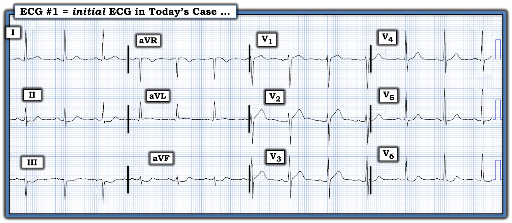
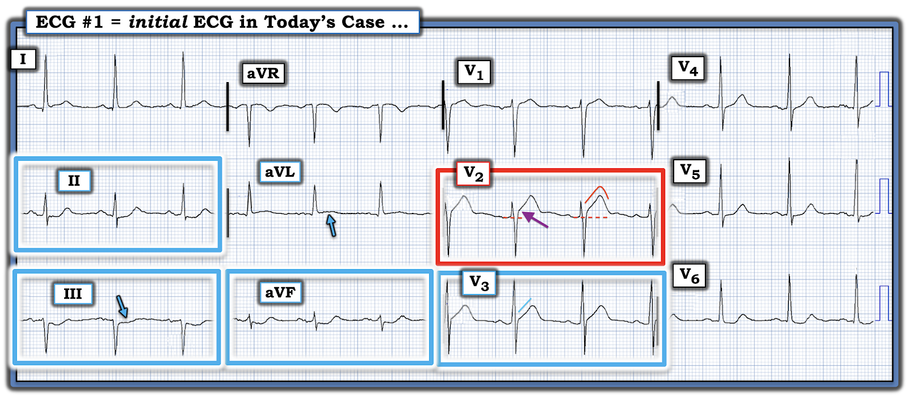
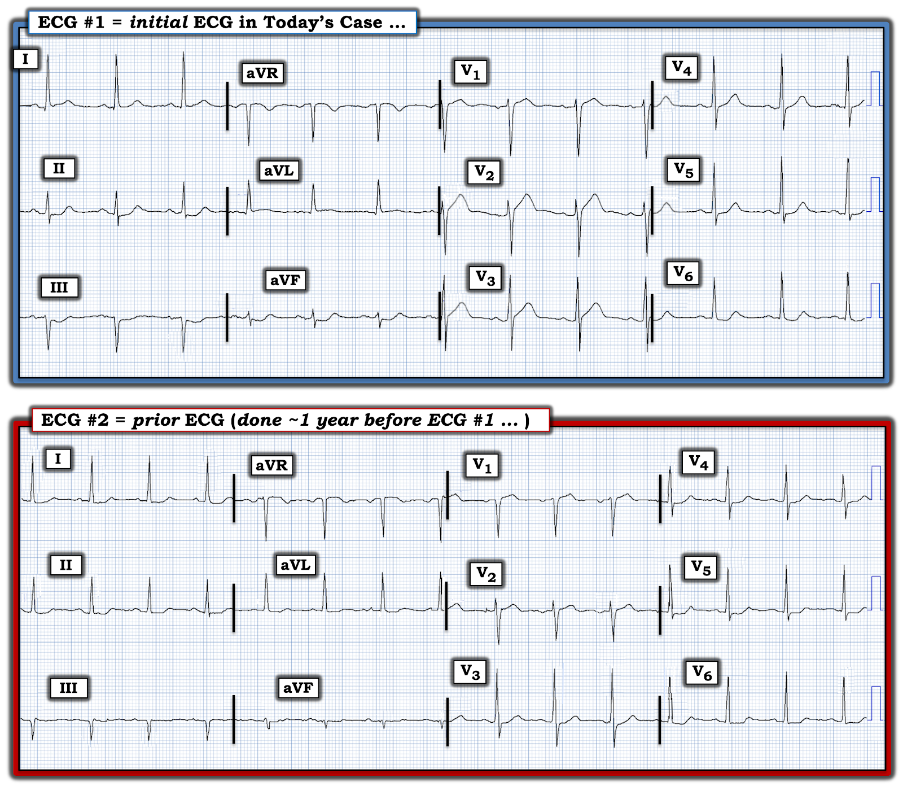
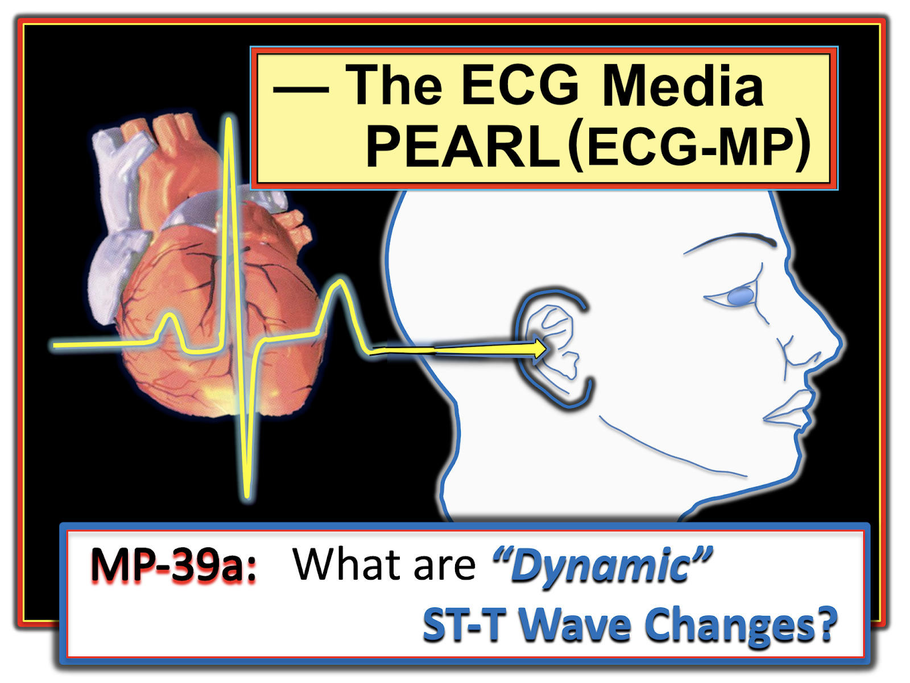

ECG Blog #423 — Đau hông lưng, ợ nóng và một điện tâm đồ
Tôi được gửi điện tâm đồ trong Hình 1 kèm thông tin: người đàn ông ở độ tuổi 60 này đến khoa cấp cứu — ED (Emergency Department) — vì đau hông lưng kéo dài vài ngày (mà ông nghĩ là do sỏi thận) và cảm giác "ợ nóng" từng cơn trong vài tuần qua.
CÂU HỎI:
- Với bệnh sử nêu trên — BẠN sẽ đọc điện tâm đồ ban đầu của bệnh nhân này, được ghi ngay khi đến ED, như thế nào?
- Bạn có nên kích hoạt phòng thông tim (cath lab) không?


BẠN có kích hoạt phòng thông tim không?
Nhiều người sẽ nhìn vào điện tâm đồ ban đầu trong Hình 1 — và nói: "Đây không phải STEMI — vì vậy lúc này không cần kích hoạt phòng thông tim".
- Tiêu chuẩn STEMI không được thỏa mãn trên điện tâm đồ #1 — vì ở người đàn ông ≥40 tuổi này, ST chênh lên không đạt ≥2 mm ở hai chuyển đạo trước liên tiếp V2 và V3.
- Đáng tiếc là, nếu làm theo mô hình STEMI dựa trên milimét đã lỗi thời trong ca hôm nay — sẽ dẫn đến chậm trễ không cần thiết trong việc tái tưới máu một chỗ tắc động mạch vành cấp, với nguy cơ mất đi một lượng đáng kể cơ tim còn cứu được.
- Điểm MẤU CHỐT: Đọc điện tâm đồ #1 mà không biết đến mô hình OMI mới hơn và ưu việt hơn là có nguy cơ bỏ sót ít nhất 30% tổng số OMI cấp (MI cấp do tắc động mạch vành cấp) — như đã bàn chi tiết trong loạt bài ECG Video Blog của chúng tôi ở Blog #406 — Blog #407 — và Blog #408.
SUY NGHĨ CỦA TÔI về Điện tâm đồ Ban đầu của ca hôm nay:
Điện tâm đồ ban đầu trong ca hôm nay (như trong Hình 1) — không "bình thường".
- Nhịp xoang tần số ~75/phút (sóng P dương và khoảng PR hằng định ở chuyển đạo II). Mọi khoảng (PR, QRS, QTc) và trục mặt phẳng trán đều bình thường (tức là, phức bộ QRS đẳng điện ở chuyển đạo aVF, cùng biên độ sóng R thực tối đa ở chuyển đạo I — gợi ý trục mặt phẳng trán gần 0 độ). Không có lớn buồng tim.
Về Thay đổi sóng Q-R-S-T:
- Sóng Q: Có sóng q vách nhỏ (bình thường) ở các chuyển đạo bên I, aVL và V6. Khó xác định có hay không một dao động dương nhỏ ở đầu phức bộ (sóng r) ở chuyển đạo III — nhưng cả 2 chuyển đạo dưới còn lại ( = chuyển đạo II,aVF) đều không có sóng Q.
- Tăng tiến sóng R: Sóng R có kích thước bình thường ở các chuyển đạo trước V1,V2 — với vùng chuyển tiếp bình thường (chiều cao sóng R trở nên lớn hơn độ sâu sóng S trong khoảng từ chuyển đạo V2 đến V3, là bình thường).
Những dấu hiệu điện tâm đồ đáng lo ngại liên quan đến Thay đổi sóng ST-T — mà tôi đánh dấu trong Hình 2.
- BẠN có thấy những vùng khiến tôi lo ngại này không?


=============================
XIN NHẤN MẠNH: Bệnh sử trong ca hôm nay không điển hình cho MI cấp, ở chỗ bệnh nhân này không đến viện vì CP (Chest Pain — đau ngực). Thay vào đó — bệnh nhân hôm nay đến với một triệu chứng "tương đương CP" tiềm tàng (tức là, cảm giác "ợ nóng"), dù cảm giác "ợ nóng" này kéo dài bao lâu thì chưa rõ.
- ĐIỂM THEN CHỐT (PEARL) #1: Như đã nhấn mạnh trong ECG Blog #228 — Không phải mọi bệnh nhân MI cấp đều đau ngực. Thực tế, tỷ lệ ước tính của MI "thầm lặng" có thể cao tới 20-40% tổng số MI (tùy theo định nghĩa được dùng). Do đó — việc không đau ngực trong ca hôm nay không loại trừ khả năng MI cấp, khi xét tuổi của bệnh nhân (độ tuổi 60) — và mô tả "cảm giác ợ nóng", vì triệu chứng này thường bị nhầm với CP do tim.
- ĐIỂM THEN CHỐT #2: Một trong những câu hỏi bệnh sử tôi ưa dùng nhất là: "Chuyện gì đã xảy ra hôm nay (chứ không phải hôm qua, hay hôm kia) — khiến ông đến ED?" Xin nhấn mạnh rằng chúng ta không biết câu trả lời cho câu hỏi này từ bệnh sử ngắn gọn nêu ở đầu ca.
- NẾU lý do bệnh nhân đến ED hôm nay là vì "ợ nóng" nặng lên rõ rệt — đây sẽ là thông tin quan trọng, làm tăng mạnh khả năng ngay cả những thay đổi điện tâm đồ tinh tế cũng có thể là manh mối quan trọng của một biến cố tim cấp đang diễn ra.
=============================
Những thay đổi điện tâm đồ đáng lo ngại trong ca hôm nay:
Tôi lo ngại về hình ảnh ở 6/12 chuyển đạo trong Hình 2:
- Với tôi, trong Hình 2 — bất thường ST-T "bắt mắt" nhất nằm ở chuyển đạo V2 (trong hình chữ nhật ĐỎ).
- ĐIỂM THEN CHỐT #3: Bình thường, có một mức ST chênh lên nhỏ, dốc lên từ từ, ở các chuyển đạo trước V2,V3. Nhưng ở đây — mức ST chênh lên tại điểm J ở chuyển đạo V2 là quá mức (tức là, theo mũi tên TÍM ở chuyển đạo này). Ngoài ra — hình dạng dốc lên nhẹ nhàng của đoạn ST ở V2 đã bị thay bằng một đoạn khởi đầu ST ("takeoff") thẳng đuỗn bất thường (đường ĐỎ ở chuyển đạo này bị thẳng ra).
- ĐIỂM THEN CHỐT #4: Tôi thích tìm 1 hoặc nhiều chuyển đạo mà tôi biết chắc là bất thường. Khi đã tìm được — những dấu hiệu tinh tế hơn ở các chuyển đạo lân cận sẽ có khả năng cao hơn nhiều là ủng hộ một biến cố tim cấp đang tiến triển. Ví dụ, trong Hình 2 — mức ST chênh lên tại điểm J ở V3 không quá mức — nhưng trong bối cảnh mức và hình dạng chắc chắn bất thường của đoạn ST chênh lên ở chuyển đạo V2 — đoạn ST thẳng đuỗn mà ta cũng thấy ở chuyển đạo V3 cũng là bất thường!
ĐIỂM THEN CHỐT #5:
Càng nhiều chuyển đạo trên một bản ghi có thay đổi ST-T bất thường — thì khả năng một biến cố tim cấp đang tiến triển càng cao. Vì vậy, dù cần hiểu rằng không phải mọi OMI thành trước đều có ST chênh xuống soi gương ở các chuyển đạo dưới — NẾU bạn có thấy ST chênh xuống ở chuyển đạo dưới, điều này càng ủng hộ rằng ngay cả ST chênh lên tinh tế ở các chuyển đạo trước cũng nhiều khả năng là cấp tính.
- Cả 3 chuyển đạo dưới trong Hình 2 đều có đoạn ST chênh xuống soi gương (trong các hình chữ nhật XANH ở chuyển đạo II,III,aVF).
- Nổi bật nhất — chuyển đạo aVF có ST chênh xuống bất thường nhất, xét đến biên độ phức bộ QRS ở chuyển đạo này nhỏ đến mức nào. Vì vậy không còn nghi ngờ gì rằng đoạn ST dạng múc, dốc xuống với phần cuối sóng T dương ở aVF phải được coi là cấp tính cho đến khi chứng minh được điều ngược lại!
- Trong bối cảnh đã biết ST-T ở aVF là bất thường — đoạn ST thẳng đuỗn kèm chênh xuống nhẹ, tinh tế-nhưng-có-thật, ở chuyển đạo II và III càng ủng hộ thêm nhận định của chúng ta rằng có ST chênh xuống soi gương ở chuyển đạo dưới.
- Điểm MẤU CHỐT: Mọi nghi ngờ tôi có thể có về việc ST-T ở các chuyển đạo trước V2 và V3 có thực sự bất thường hay không — đã bị xóa tan ngay khi tôi thấy ST-T chắc chắn bất thường ở chuyển đạo aVF!
- ĐIỂM THEN CHỐT #6: Dấu hiệu đơn độc sóng T đảo ngược ở chuyển đạo III và/hoặc aVF đi kèm phức bộ QRS âm ưu thế (hoặc âm hoàn toàn) — không nhất thiết là bất thường. NHƯNG — dấu hiệu đoạn ST thẳng đuỗn kèm một mức ST chênh xuống ở chuyển đạo III, thay vì chỉ sóng T đảo ngược (như mũi tên XANH chỉ ra trong Hình 2) — rõ ràng là không bình thường. Và ST dẹt kèm một mức ST chênh xuống ở III càng chắc chắn bất thường hơn khi đi kèm ST-T chênh xuống ở 2 chuyển đạo dưới còn lại! (như trong ca hôm nay).
- ĐIỂM THEN CHỐT #7: Chuyển đạo "tìm đến đầu tiên" của tôi khi đang cân nhắc khả năng OMI thành trước cấp — là chuyển đạo aVL. Sự hiện diện của ST chênh lên dù tinh tế (như mũi tên XANH chỉ ra trong Hình 2) củng cố nghi ngờ của chúng ta về một biến cố tim cấp trong ca hôm nay.
- Lưu ý rằng có sự thỏa mãn hình dạng soi gương (tức là, đối xứng ngược như ảnh trong gương) "kỳ diệu" của ST-T giữa ST chênh xuống tinh tế ở III — và ST chênh lên cũng tinh tế không kém ở aVL. Đây thêm một dấu hiệu nữa cho thấy dù không có CP mới trong ca hôm nay — tổng hợp các dấu hiệu ST-T bất thường ở 6 chuyển đạo được đánh dấu trong Hình 2 gợi ý mạnh một biến cố tim cấp đang tiến triển!
- ĐIỂM THEN CHỐT #8: Phân bố thay đổi ST-T trong ca hôm nay gợi ý hình ảnh điện tâm đồ được gọi là xoáy trước tim (Precordial Swirl) — ở chỗ có đoạn ST thẳng đuỗn và chênh lên ở V1,V2 kèm một mức ST chênh xuống dạng vòm ở V6. Ý nghĩa lâm sàng của việc nhận ra hình ảnh này là nó gợi ý tắc LAD ở đoạn rất gần, liên quan đến vách liên thất (Xem ECG Blog #380).
- ĐIỂM THEN CHỐT #9: Trong số các việc cần làm vào thời điểm này của ca hôm nay có: i) Quay lại và hỏi kỹ bệnh nhân — cố "cảm nhận" rõ hơn khả năng "cảm giác ợ nóng" của ông có phải là triệu chứng "tương đương CP" hay không — tập trung vào việc cảm giác này đã tăng lên bao nhiêu trong hôm nay, và nó nặng đến đâu vào lúc ghi điện tâm đồ ban đầu; và, ii) Giả sử đã qua ít nhất 10 phút kể từ khi ghi điện tâm đồ #1 — Ghi lại điện tâm đồ.
- Xin nhấn mạnh — Khi không có triệu chứng cấp, có thể chưa có chỉ định kích hoạt phòng thông tim ngay chỉ dựa trên điện tâm đồ #1. Dù vậy — NẾU thực sự có một biến cố tim cấp đang diễn ra — thì các điện tâm đồ liên tiếp (ghi lại sớm, ngay trong khoảng 10-30 phút sau điện tâm đồ ban đầu) — kết hợp với thông tin lâm sàng (tức là, giá trị troponin ban đầu, đối chiếu sự hiện diện và mức độ nặng tiếp diễn của triệu chứng với mỗi điện tâm đồ liên tiếp được ghi) — là những việc nhiều khả năng sẽ nhanh chóng xác nhận nhu cầu thông tim kịp thời.
=============================
Ca bệnh hôm nay tiếp diễn:
Đã tìm được một điện tâm đồ trước đây của bệnh nhân. Để dễ theo dõi, trong Hình 3 — tôi đặt điện tâm đồ cũ này cạnh bản ghi ban đầu hôm nay:
CÂU HỎI:
- Ta học được gì từ bản ghi trước đây này?


Điều ta học được từ điện tâm đồ trước đây:
Dù thay đổi ST-T trên điện tâm đồ ban đầu hôm nay là tinh tế và không thỏa tiêu chuẩn STEMI dựa trên milimét — khi so sánh với bản ghi trước đây trong Hình 3, không thể nghi ngờ gì — rằng các dấu hiệu ST-T được đánh dấu trên điện tâm đồ ban đầu là mới!
- Dù hình dạng QRS ở các chuyển đạo ngực không thay đổi đáng kể — đoạn ST thẳng đuỗn ở chuyển đạo V2 và V3 trước đây không có! Ngoài ra — trước đây không có ST chênh lên ở V2 — và thậm chí còn thoáng có ST chênh xuống ở V3.
- Ở các chuyển đạo chi — ST chênh xuống ở chuyển đạo dưới ít hơn nhiều so với điện tâm đồ ban đầu hôm nay — và trước đây không có ST chênh lên ở chuyển đạo aVL.
- ĐIỀU CỐT LÕI: Dù vì bệnh sử quá ngắn gọn nên vẫn còn câu hỏi về thời điểm các dấu hiệu ghi nhận trên điện tâm đồ #1 xuất hiện — không còn nghi ngờ gì rằng các dấu hiệu ST-T nêu trên trên điện tâm đồ ban đầu hôm nay là mới kể từ bản ghi trước đây cách ~1 năm. Do đó — phải giả định có OMI cấp và/hoặc mới xảy ra ở LAD (Left Anterior Descending — động mạch liên thất trước) cho đến khi chứng minh được điều ngược lại.
- Cuối cùng thông tim đã được thực hiện trong ca hôm nay — gần 7 giờ sau khi đến ED. Kết quả cho thấy bệnh nhiều nhánh mạch vành, với tổn thương "thủ phạm" ở cả LAD đoạn gần, lẫn nhánh chéo thứ 1 của LAD. Tái tưới máu bằng PCI thành công.
- Trong số các việc đã diễn ra trong những giờ trước khi thông tim, có: i) Có kết quả 3 lần xét nghiệm troponin bất thường, với giá trị tăng dần; ii) Nhiều điện tâm đồ ghi lại, trong đó có một bản mà các dấu hiệu cấp được đánh dấu trong Hình 2 đã cải thiện nhiều (dù không có ghi chép nào về sự hiện diện và/hoặc mức độ nặng tương đối của triệu chứng bệnh nhân lúc đó); và, iii) Chụp CT mạch vành — cho thấy tắc gần hoàn toàn LAD đoạn gần.
BÌNH LUẬN CUỐI CÙNG: Thông tim trong ca hôm nay lẽ ra không nên bị trì hoãn gần 7 giờ.
- Dù việc đánh giá ca hôm nay khó khăn hơn là điều dễ hiểu vì bệnh nhân không đau ngực — khả năng "ợ nóng" của bệnh nhân có thể là một triệu chứng "tương đương CP" cấp dường như đã không được khai thác.
- Ngay cả khi không có bệnh sử "triệu chứng tương đương CP mới" — các dấu hiệu bất thường trên điện tâm đồ ban đầu (như đã phân tích chi tiết khi bàn về Hình 2) — đặt trách nhiệm lên nhân viên y tế phải coi là OMI cấp cho đến khi chứng minh được điều ngược lại.
- Ngay khi tìm thấy điện tâm đồ trước đây — lẽ ra phải thấy rõ rằng các thay đổi ST-T trên điện tâm đồ ban đầu chắc chắn là cấp tính. Trong bối cảnh này — bất kỳ mức tăng troponin nào cũng là yêu cầu bắt buộc phải thông tim kịp thời.
- Thay đổi ST-T "động" (tức là, sự cải thiện các dấu hiệu điện tâm đồ trên một bản ghi liên tiếp) — lẽ ra phải được coi là thêm một chỉ định thông tim kịp thời.
- Trong bối cảnh các diễn biến trên — việc trì hoãn thêm để chụp CT mạch vành không có ích gì. Các dấu hiệu điện tâm đồ nêu trên (đặc biệt khi đi kèm bất kỳ giá trị troponin tăng nào, dù rất nhẹ) — xác định ca hôm nay là OMI cấp cần thông tim kịp thời. Nhu cầu thông tim kịp thời này sẽ không thay đổi bất kể kết quả CT mạch vành (tức là, tái tưới máu tự phát được gợi ý trong ca hôm nay qua sự "cải thiện" các dấu hiệu điện tâm đồ bất thường — điều có thể biểu hiện thành "hẹp không đáng kể" = kết quả "âm tính" trên CT mạch vành).
- Như ECG Blog này thường nhấn mạnh — thông tim kèm PCI kịp thời vẫn có chỉ định sau tái tưới máu tự phát, vì nguy cơ cao tắc lại tự phát trong những giờ tiếp theo (Xem ECG Blog #326 — Blog #337 — và Blog #320, cùng nhiều bài khác).
==================================
Lời cảm ơn: Xin cảm ơn Hans Helseth (ở Minneapolis, Minnesota, Hoa Kỳ) đã gửi ca bệnh và bản ghi này.
==================================
Các bài ECG Blog liên quan đến ca hôm nay:
- ECG Blog #205 — Ôn lại Cách tiếp cận hệ thống của tôi trong đọc điện tâm đồ 12 chuyển đạo.
- ECG Blog #193 — Ôn lại những điều cơ bản để dự đoán động mạch "thủ phạm" (và bàn lại vì sao thuật ngữ "STEMI" — nên được thay bằng "OMI" = Occlusion-based MI — MI do tắc).
=================================
- BẤM VÀO ĐÂY — để xem 6 Video ECG mới (về đọc nhịp — đọc điện tâm đồ 12 chuyển đạo qua các ca bệnh để chẩn đoán OMI cấp) của tôi.
- BẤM VÀO ĐÂY — để nghe 2 Podcast ECG mới (về các lỗi khi đọc điện tâm đồ & nhịp — và — các lỗi khi đánh giá OMI cấp) của tôi.
=================================
- Nhận biết sóng T tối cấp — các nhóm chuyển đạo — một OMI (dù không phải STEMI) — Xem Bình luận của tôi ở cuối trang trong bài ngày 8 tháng 11 năm 2020 trên Dr. Smith's ECG Blog.
- Nhận biết các dấu hiệu điện tâm đồ của xoáy trước tim (Precordial Swirl) (do OMI cấp ở các nhánh xuyên vách của LAD) — Xem Bình luận của tôi ở cuối trang trong bài ngày 22 tháng 3 năm 2024 trên Dr. Smith's ECG Blog — cũng như ECG Blog #380.
- ECG Blog #294 — Ôn lại cách nhận biết NẾU động mạch "thủ phạm" đã được tái tưới máu.
- ECG Blog #230 — Ôn lại cách so sánh các điện tâm đồ liên tiếp.
- ECG Blog #115 — Cho thấy thay đổi ST-T ngoạn mục có thể xảy ra chỉ trong vòng 8 phút.
- ECG Blog #268 — Cho thấy một ví dụ về sóng T tái tưới máu.
- ECG Blog #400 — Ôn lại khái niệm thay đổi ST-T "động".
- ECG Blog #387 — Thay đổi động trong 2 phút.
- ECG Blog #337 — Một ca "NSTEMI" thực ra là OMI đang diễn ra với thời gian không rõ (biểu hiện bằng sóng T tái tưới máu ở các chuyển đạo dưới).
- ECG Blog #258 — Cách "định tuổi" một nhồi máu dựa trên điện tâm đồ ban đầu.
- ECG Blog #184 — minh họa mối quan hệ đối xứng ngược như ảnh trong gương "kỳ diệu" khi thiếu máu cục bộ cấp giữa chuyển đạo III và chuyển đạo aVL (được giới thiệu trong Audio Pearl #2 của bài này).
- Tầm quan trọng của mô hình OMI mới (so với mô hình STEMI cũ) — Xem Bình luận của tôi trong bài ngày 31 tháng 7 năm 2020 trên Dr. Smith's ECG Blog.
- Để ôn lại về trường hợp dù có OMI cấp — hs-troponin ban đầu vẫn có thể trả về bình thường — Xem bài ngày 24 tháng 3 năm 2023 trên Dr. Smith’s ECG Blog.
==================================
PHẦN BỔ SUNG (31/3/2024):
- Tôi đã bổ sung một loạt Pearl Audio liên quan đến ca hôm nay.

ECG Media PEARL #1 (3:00 phút Audio) — Ôn lại khái niệm sóng T de Winter (và nhiều biến thể của "chủ đề" này ).

ECG Media PEARL #35a (4:50 phút Audio) — KHI NÀO thì sóng T là tối cấp hay là một biến thể tái cực?


ECG Media PEARL #39a (4:50 phút Audio) — Ôn lại khái niệm thay đổi ST-T động (và cách dấu hiệu điện tâm đồ này giúp xác định có chỉ định thông tim cấp hay không).

ECG Media PEARL #46a (6:35 phút Audio) — Cách so sánh các điện tâm đồ liên tiếp (tức là, bạn đang so sánh "táo với táo" — hay — với cam?).

ECG Media PEARL #10 (10 phút Audio) — ôn lại lý do vì sao thuật ngữ “OMI” ( = Occlusion-based MI — MI do tắc) nên thay thế thuật ngữ quen thuộc hơn là STEMI — và — ôn lại những điều cơ bản về cách dự đoán động mạch "thủ phạm".

ECG Media PEARL #11 (6 phút Audio) — Ôn lại cách nhận biết NẾU động mạch “thủ phạm” (tức là, bị tắc cấp) đã được tái tưới máu, dựa trên các tiêu chí lâm sàng và điện tâm đồ.